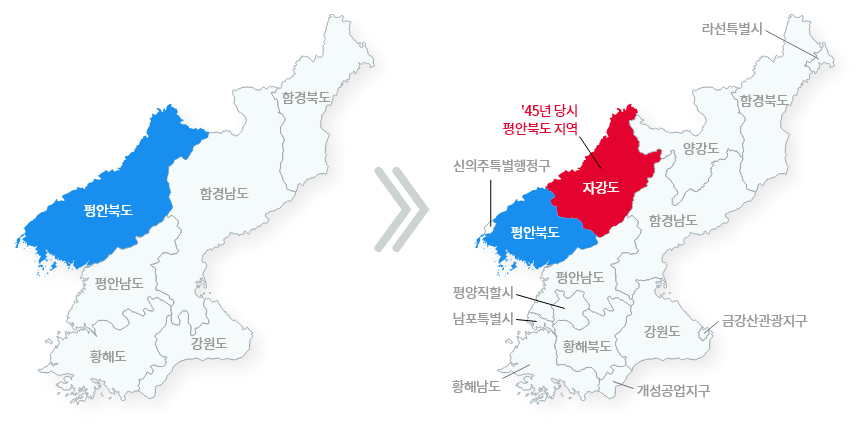
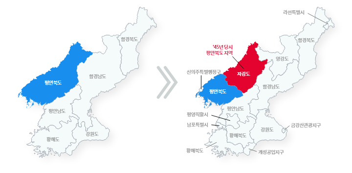
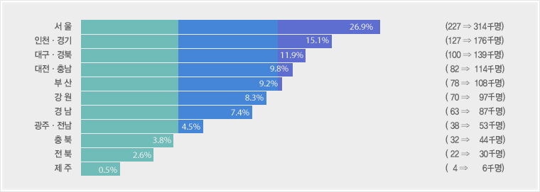

이북5도
위치
-
옛부터 국방제1의 요충지, 대륙과의 문물교역 관문
東낭림산맥을 경계로 함경남도와 인접 (동경 127˚ 38′)
西황해에 접하여 중국본토를 마주봄 (동경 124˚ 11′)
南묘향산맥과 청천강을 경계로 평안남도 연결 (북위 39˚ 16′)
北압록강을 국경으로 만주대륙과 접속 (북위 41˚ 48′)
행정구역의 변천
- 북한은 평안북도를 평안북도와 자강도로 분리 (1949. 1. 31)
- 행정구역체계를 개편하여 면제도를 없앰 (4단계 ⇒ 3단계)


| '45년 당시 |
|---|
| 6도 |
| 현재 |
|---|
| 1직할시, 2특별시, 1구, 2지구, 9도 |
8.15 당시와 ’49년 개편 대비
| 구분 | 해방당시 | 현재 | 증감 | |||
|---|---|---|---|---|---|---|
| 소계 | 평안북도 | 자강도 | ||||
| 면 적 (㎢) |
28,443 | 29,339 | 12,575 | 16,764 | 896 | |
| 인 구 (천명) |
1,931 | 3,751 | 2,533 | 1,218 | 1,820 | |
| 행정구역 | 시 | 1 | 5 | 2 | 3 | 4 |
| 군 | 19 | 38 | 23 | 15 | 19 | |
| 구역 | 3 | 3 | 3 | |||
| 읍 | 10 | 38 | 23 | 15 | 28 | |
| 면 | 164 | △164 | ||||
| 동리 | 1,491 | 870 | 566 | 304 | △621 | |
| 노동자구 | 42 | 26 | 16 | 42 | ||
| 도청소재지 | 신의주시 | 신의주시 | 강계시 | |||
월남도민 분포
- 가호적 취득당시 (70년말) ― 843명(이북도민의 15.4%)
- '97추정 ― 1,168명('71～'96 자연 인구증가율 38.52% 감안)

도민 단체결성
- 도민조직 ― 333단체(중앙도민회, 지구도민회, 시·군민회, 읍·면민회 등)
- 직능단체 ― 284단체 (장학회, 체육회, 새마을조직, 청년회 등 )
| 구분 | 계 | 서울 | 부산 | 인천 | 대구 | 경기 | 광주 | 강원 | 충북 | 충남 | 전북 | 군옥 | 전남 | 경북 | 경남 | 제주 | 해외 | |
|---|---|---|---|---|---|---|---|---|---|---|---|---|---|---|---|---|---|---|
| 합 계 | 617 | 437 | 21 | 7 | 5 | 28 | 5 | 12 | 9 | 23 | 5 | 5 | 10 | 28 | 9 | 3 | 10 | |
| 도 민 회 | 계 | 333 | 194 | 18 | 4 | 3 | 21 | 3 | 10 | 6 | 19 | 4 | 3 | 7 | 25 | 9 | 2 | 5 |
| 중앙도민회 | 1 | 1 | ||||||||||||||||
| 지구도민회 | 55 | 1 | 1 | 1 | 10 | 1 | 6 | 3 | 2 | 3 | 1 | 4 | 7 | 9 | 1 | 5 | ||
| 시ㆍ군민회 | 68 | 20 | 14 | 4 | 2 | 13 | 15 | |||||||||||
| 읍ㆍ면민회 | 209 | 174 | 3 | 3 | 2 | 7 | 2 | 2 | 3 | 4 | 1 | 2 | 3 | 3 | 1 | |||
| 직 능 단 체 | 284 | 243 | 3 | 3 | 3 | 7 | 2 | 2 | 3 | 4 | 1 | 2 | 3 | 3 | 1 | 5 | ||